×底边×高）的面积。在此基础上，你可以把任何多边形分割成矩形和三角形，从而计算出它的面积。例如：
×底边×高）的面积。在此基础上，你可以把任何多边形分割成矩形和三角形，从而计算出它的面积。例如：几何学在古希腊语中是“土地测量”的意思。在很长一段时间里，几何学一直是数学中最实用的领域之一。我们经常把古代文化与其留下的标志性建筑联系起来，几何学就是这些建筑的基石。
下面我们将简要浏览一下几何的基础知识。
我们通常用直线上的两个点为这条直线命名。例如，如果两条直线AB和CD相交于E，我可以表示如下：
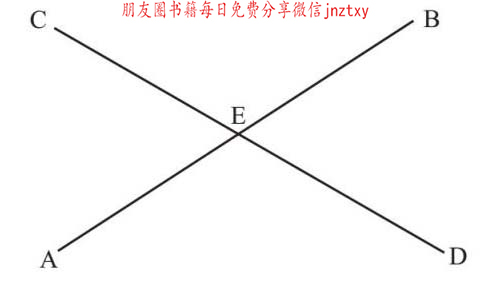
E点上有4个角，我们通常用两条线描述一个角度。下图标记的角度是从A到E再到C构成的，所以这个角被称为角AEC，或表示成∠AEC。而且∠CEA与∠AEC是一回事。
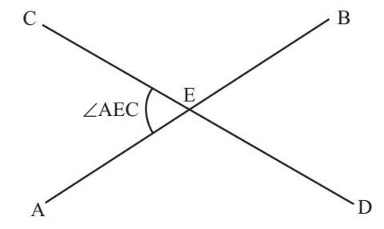
古代美索不达米亚人使用以60为基准的系统，从一点出发的角度最大值为360度。一条直线将一个点或顶点（如E）一分为二，每边分别是180°。经过E的两个角∠AEC与∠BED相等。这样两个相对的角叫作对顶角。
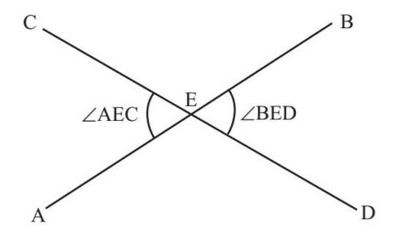
虽然我们不知道图中的角度值，但是我可以说∠AEC和∠BED都是锐角，两者都小于90°，而∠CEB和∠AED则在90°和180°之间，被称为钝角。大于180°的角被称为反射角。
平行线之间的距离总是相等，且永不相交。如果我们让一条线穿过一对平行线（用箭头表示），我们可以了解到更多关于平行线的特征：
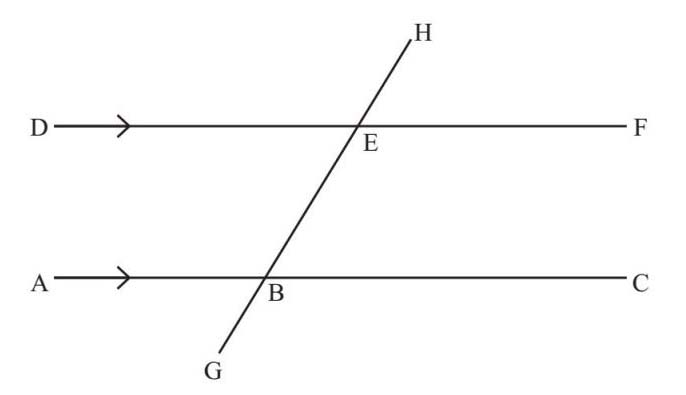
直线GH与平行线DF和AC相交于E和B两点上。在每个交点上，相同位置的角是相等的，也被称为同位角，例如∠HEF和∠HBC：
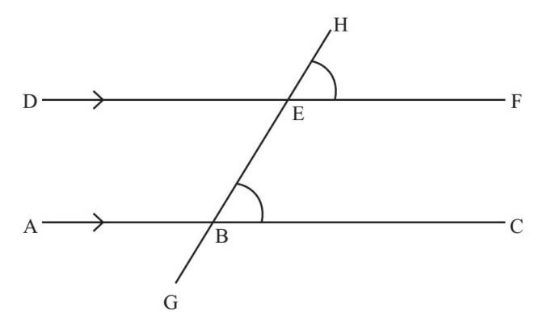
我们可以看到，∠HEF和∠BED是一对对顶角，所以两者一定相等。所以，我们得出∠BED和∠HBC也一定相等，它们被称为内错角。
几何最初只是一项基于工程的实用研究，但它很快就进入了理论研究领域，特别是当有哲学思想的希腊人介入之后。泰勒斯（约前624—约前547）、毕达哥拉斯（前580至前570—约前500）和欧多克斯（约前390—前337）都有所建树。而居住在埃及的希腊人欧几里得（活动时间约前300年）则被尊称为几何之父。
为什么是他而不是其他人？答案是他写了一本畅销书。
他的《几何原本》被认为是有史以来最伟大的教科书，直到20世纪，它仍被视为知识分子的标准读物。今天，它的大部分内容都散布于学校的数学课本中。数学家把它看作严谨证明的第一例，为后来的证明奠定了基础。欧几里得从显而易见的事实出发，把不需要证明的规律称为公理。例如，两点确定一条直线，或者任意一条直线可以无限延伸。然后，他用这些公理来推衍几何和代数中的定理，并证明它们的正确性。欧几里得认为，三角形的三个内角的和一定是180°，而这个结论的证明仅使用了同位角和内错角的概念。想象在两条平行线中间有一个三角形ABC：
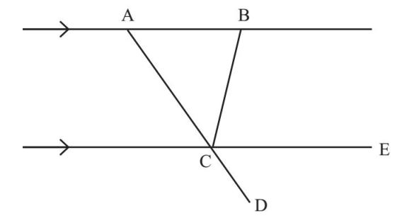
欧几里得认为：
∠ABC和∠BCE是内错角，因此两者是相等的。
∠BAC和∠ECD是同位角，因此也是相等的。
因此，就有∠ABC +∠BAC=∠BCE+∠ECD：
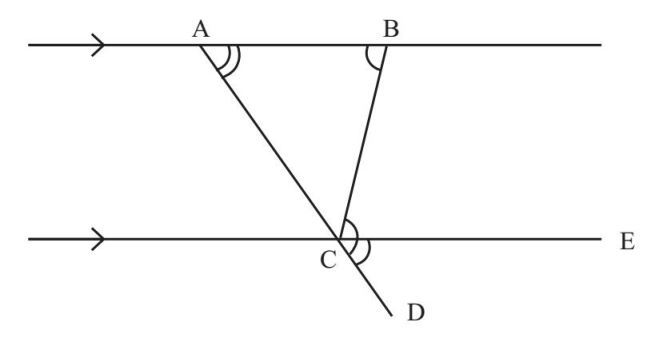
如果我们在方程的两边加上三角形的第三个角，即∠ACB，可以得到：
∠ABC+∠BAC+∠ACB=∠BCE+∠ECD+∠ACB
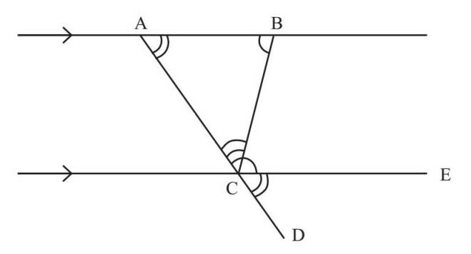
三角形中的各个角之和等于一个平角，因此，三角形中各个内角相加为180°。
周长是指二维形状边缘的长度之和。自从最早的狩猎者定居下来之后，人们就开始对形状产生了兴趣。有证据显示，有些古代文化中已经出现了关于田地大小和形状的数学问题，但这常常是为了向农民征税。
具有直边的形状或多边形的周长是可以直接测量的。但当引入曲线或弧线时，计算周长就变得不那么简单了。你可以用一些软的绳子或线，沿曲线放置，然后再把绳子或线拉直，从而测量长度。然而，数学家更喜欢用公式，因此为了计算圆周长的公式，古代数学家花费了不少时间。
为了求出圆的周长，古代数学家找到了正方形的边长与以该正方形边长为半径的圆的周长之间的关系：
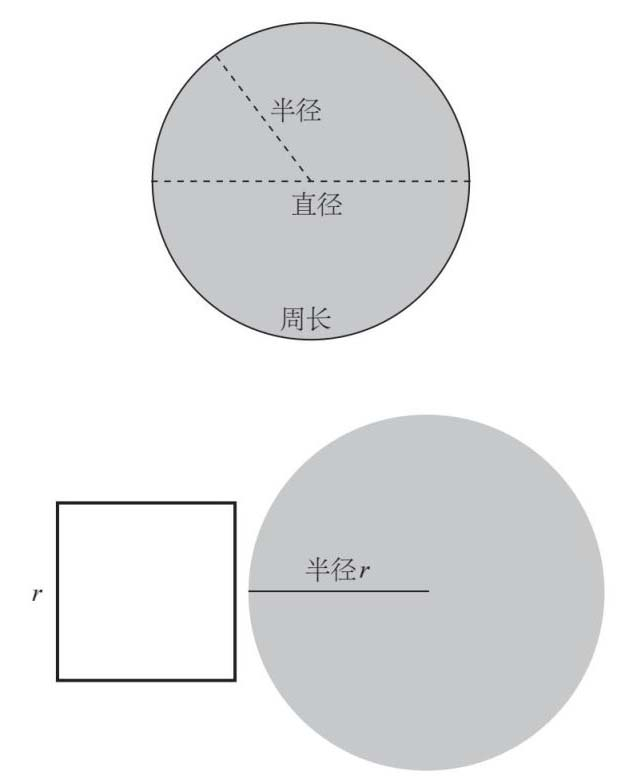
圆的周长是正方形边长的6倍多一点儿：
圆周长=半径×6倍多一点儿
一些数学家建议把6倍多一点儿用一个符号表示，即希腊字母τ。如果将直径表示为半径的2倍，上式就变为：
圆周长=半径×3倍多一点儿
古巴比伦人和古埃及人已经可以比较精确地计算圆和圆弧，并将这些知识用在建筑物上，但首先精确计算圆周长的却是希腊数学奇才阿基米德（约前287—约前212），他的方法是用两个六边形为圆取一个近似值，如下图所示：
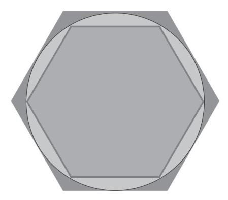
测量六边形的周长比较容易，因为它们的每条边都是直的。阿基米德认为圆的周长介于内切六边形和外切六边形之间。然后，为了使多边形的周长更接近圆周长，阿基米德不断将多边形的边数加倍。当多边形的边增加到96个时，周长大约是直径的
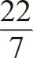
倍。长期以来，这个值被称为阿基米德常数，但后来开始使用符号π，它是希腊语中的“圆周”的第一个字母。阿基米德得出的值非常接近真实值，至今在手工计算的数学考试中仍被用作近似值。
因此，对于半径为r 或直径为d 的圆，我们得到：
圆周长=πd =2πr
后来的研究表明π是一个无理数，所以我们能做的就是取它的近似值。π也是一个超越数。这种数字不可能是任何一个整系数多项式方程的解。由于很难证明一个数是超越数，所以1882年，德国数学家费迪南德·冯·林德曼（Ferdinand von Lindemann，1852—1939）首次用π表示了这个数。
面积是指平面空间中的某个图形的大小。冯·林德曼用计算表明，你无法用尺规作图画一个面积与圆相同的正方形，这是几何学家自古以来一直未能做成的事情。
当我们购买墙壁或办公空间的油漆时，我们所花的钱与面积是成正比的。计算多边形面积的关键是计算矩形（长×宽）和三角形（
×底边×高）的面积。在此基础上，你可以把任何多边形分割成矩形和三角形，从而计算出它的面积。例如：
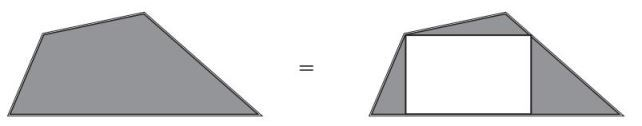
这个不规则四边形可以被分割成三个三角形和一个矩形。然而，如果我们想计算弧形的面积，就不那么容易了。我们在前文中了解了圆面积的公式，但它是怎么推导出来的呢？
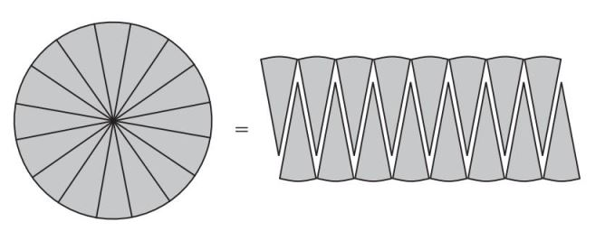
我可以把圆等分，再把它们重新排列成近似矩形的图形。等分得越细致，重新排列后就越接近圆形，最后会与矩形无限接近。我们知道矩形的面积是长×宽，矩形的宽是从圆心到边缘的距离，即半径；矩形的长是圆周长的一半，因为矩形的两侧边长加在一起等于圆周长。所以矩形的面积就是半径×（圆周长÷2）：
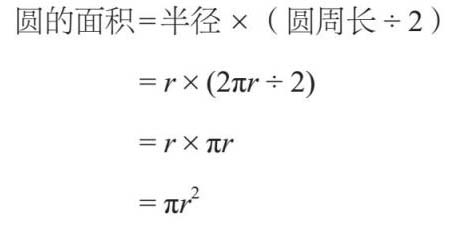
我们当地的比萨饼餐厅提供几种不同大小的比萨饼，按直径尺寸出售。一个小比萨饼的直径为9.5英寸 [1] ，售价13.99英镑。单人份比萨饼的直径是7英寸，售价6.99英镑。请问，哪一种比萨饼更划算？
把它们的面积做比较（结果取小数点后一位），可知：
小比萨饼面积=π×（9.5/2）2 =70.9平方英寸
单人份比萨饼面积=π×（7/2）2 =38.5平方英寸
两个单人份比萨饼的面积是38.5×2=77平方英寸，总共花费13.98英镑，所以比小比萨饼更划算。这样看来，买之前最好先算清楚！
圆的面积可以用圆面积公式计算，用其他曲线绘制的图形则可以使用积分来计算，积分是微分的逆运算。如果一个曲线可以用一个方程来描述，我们就可以算出它的积分，从而得到另一个方程，这样就可以计算出该曲线所组成图形的面积。
微积分也可以在三维空间中使用，从而计算出像球体一样的曲线形状的体积。但一切都源于毕达哥拉斯，没有他，就没有完整的几何。
下面是一个可以创建形状的算法。首先，我们从一个正方形开始，然后在每个边的中间再添加一个正方形：
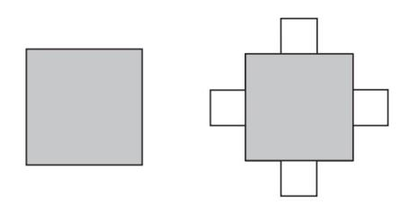
不断重复这个规则：
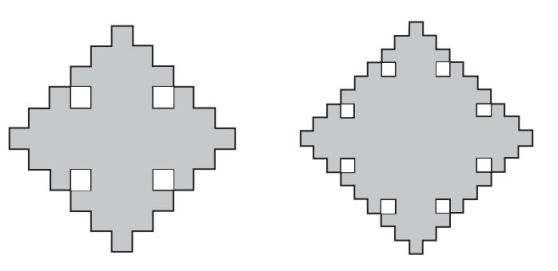
这种不断重复原本形状的模式叫作分形，它们表现出一些非常有趣的特性。如果某个形状的边长增加一倍，我们就说它具有2倍的放大系数。通常，面积会以放大系数的平方倍数增加，因此在本例中是22 =4倍。这是否适用于前面的不规则形状？
在第一次产生分形（称为迭代）时，每条边的放大系数是
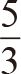
。如果正方形的原边长为3，那么此时的边长就为5：
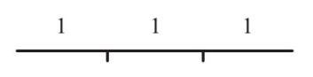
变为：
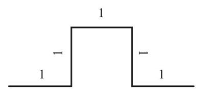
面积从9×（3×3）变为13。如果上述提到的规则是成立的，就应该有：
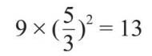
也就是说，面积以放大系数的平方倍数成比例增加。但上式的计算中左边的结果是25，等式并不成立。可见，每进行一次迭代，整个图形的边长都增加了，比面积的增加值还多。
其结果是，如果我无限地继续迭代，生成图形的周长趋向于无穷大，但面积是有限的。如果我们在三维空间中做此类迭代，也会发生类似的情况：物体的体积有限，但表面积无限延伸。许多植物和动物都利用了这一点，以无限扩大表面积，如肺和叶片中都存在这种图形。
[1] 1英寸≈ 2.54厘米。——编者注